CSS3: Estilos internos y Externos,Selectores CSS
Objetivo General
Exponer a traves de la web las bases para crear e implementar un sitio web que involucre las bases del desarollo web
Objetivos Especificos
Comprender las bases del desarrollo web junto con sus principales herramientas
Diseñar una OVA para implementar el contenido a traves de HTML y CSS
Usar GitHub como sistema de control de versiones para familiarizarnos con el entorno laboral
Materiales
Textos
Selectores CSS - MDN
Estilos Internos y Externos
Imagenes
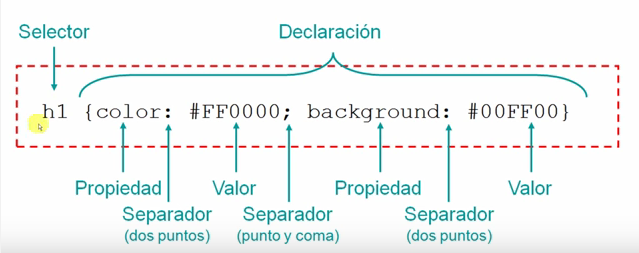
Videos
Estilos Internos y Externos
Conectar CSS y HTML
Selectores CSS
Contenido
Estilos internos y Externos
Estilos Internos
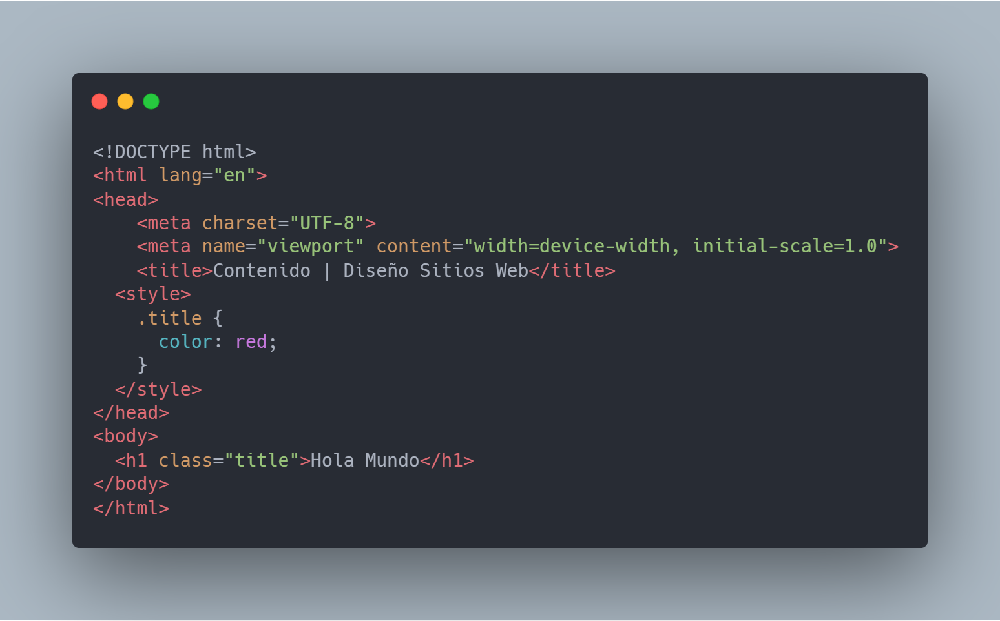
Estilos Externos
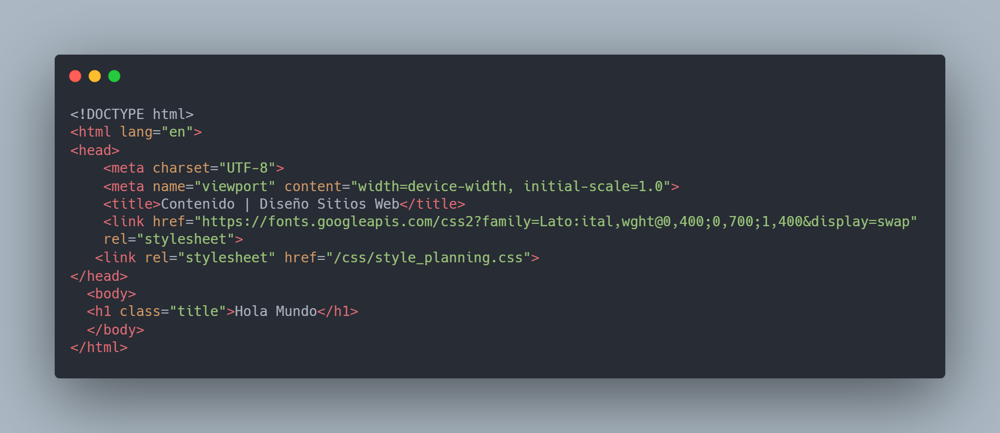 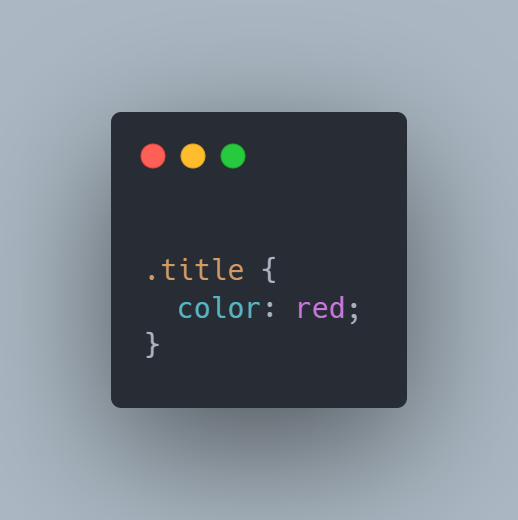
Selectores
Existen 6 clases de selectores
Selector Simple
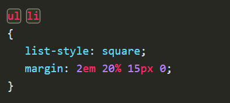
Selector de tipo
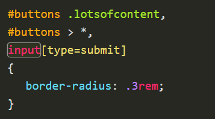
Selector universal
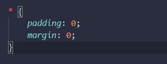
Selector de ID
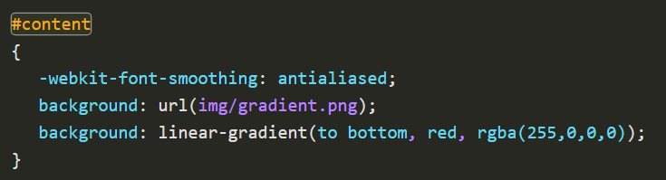
Selector de clase
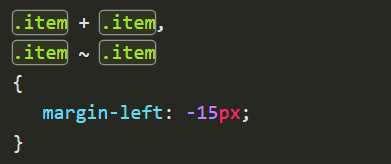
Selector de atributo
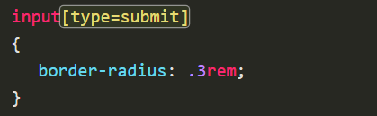
Si desea consultar mas sobre selectores, revisar el siguiente recurso
Selectores
Maquetacion
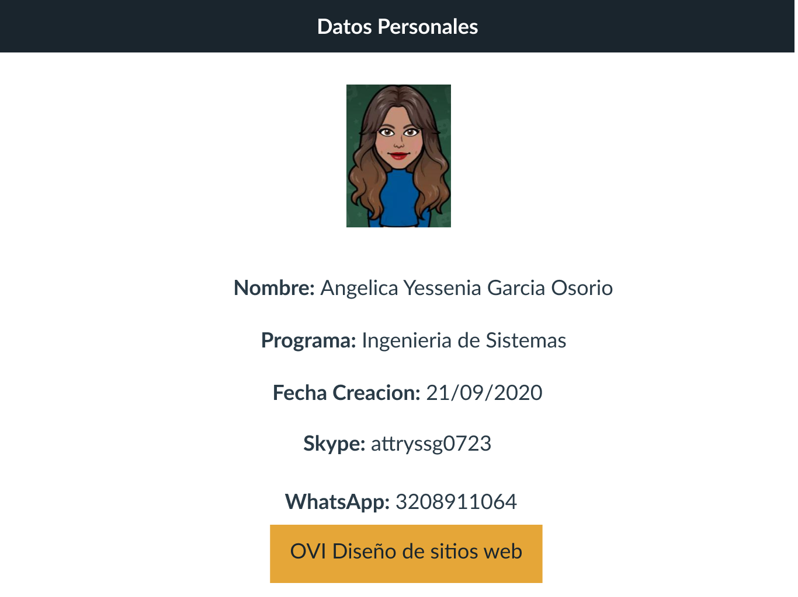 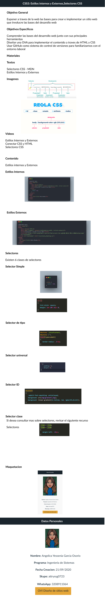

 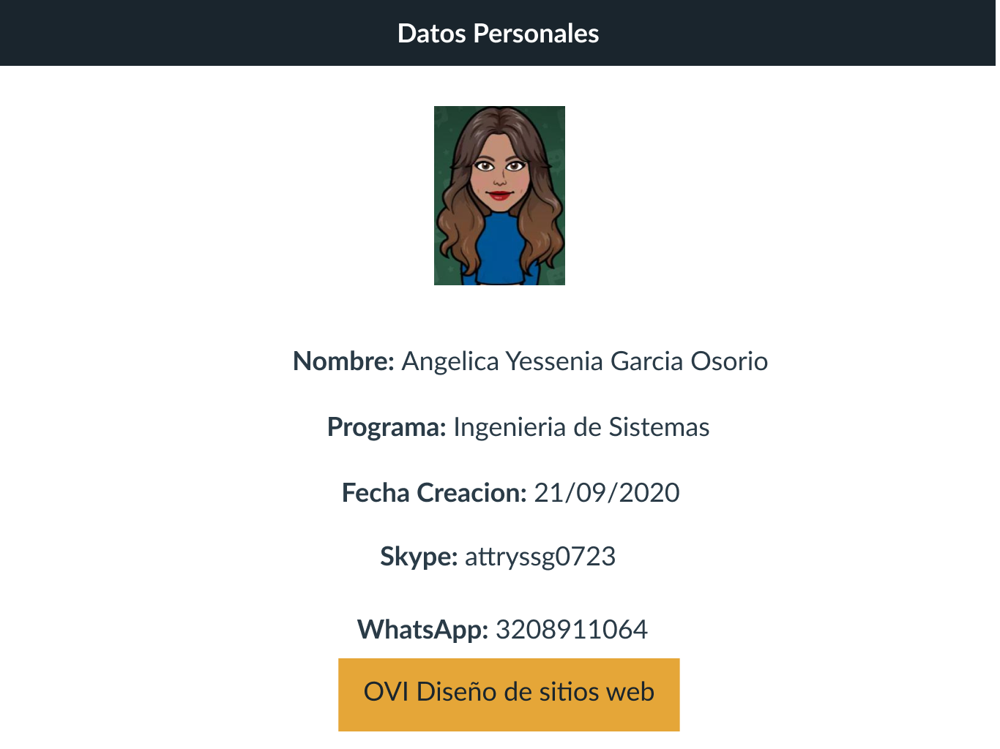
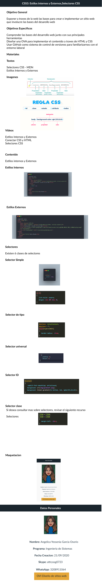
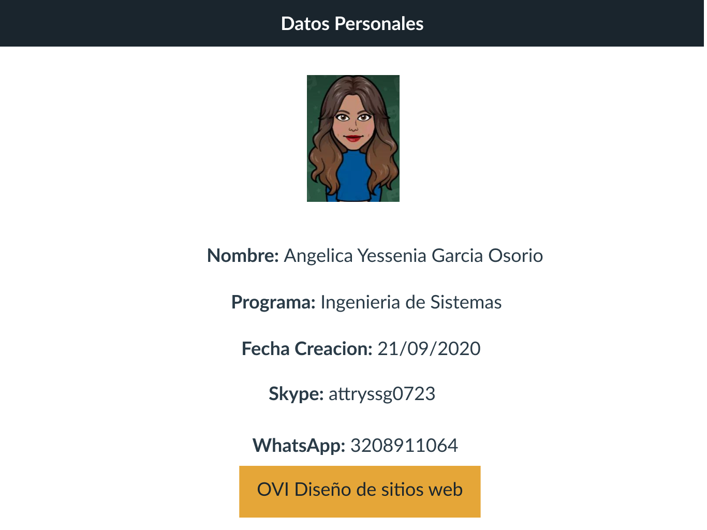
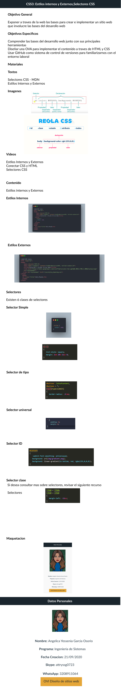